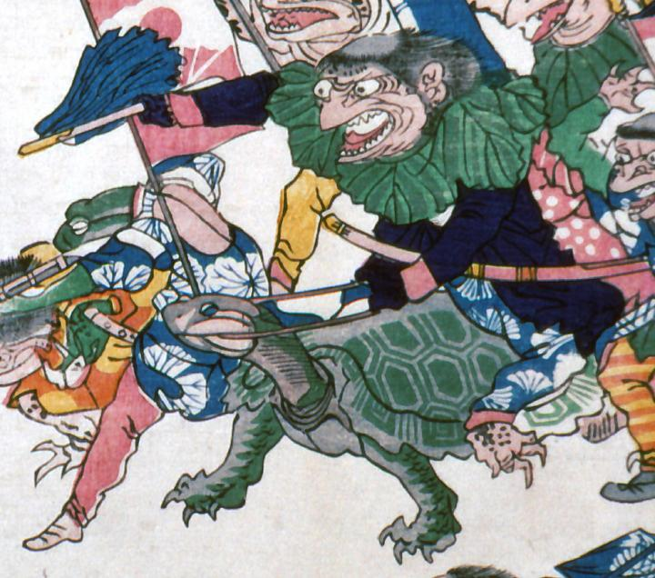

← 图鉴索引

大きな亀に乗る河童。紺の上衣に葉っぱの咽喉輪をつけ、采配を振っている。
出典：親書誌：A5_pushkin_0041：新宮魚勝戦；シングウウオガッセン／日付：2011／資源識別子：A5_pushkin_0041_0004_0000
Copyright (c)2010- International Research Center for Japanese Studies, Kyoto, Japan. All rights reserved.